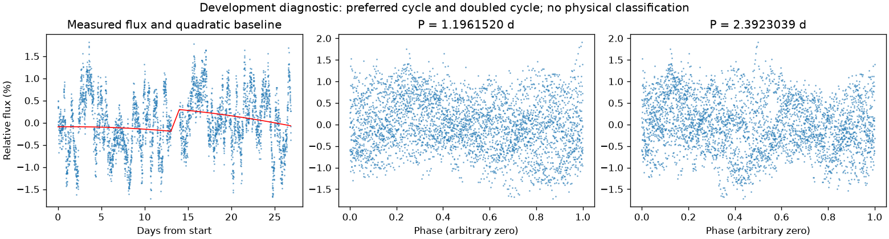
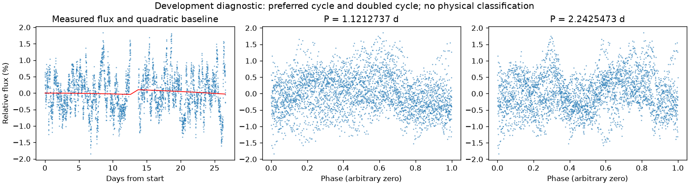

并非所有时段都支持重复变化
第三版周期：None 天；状态：not_established。

左图红线是缓慢基线；右面两图去除该基线。若未通过周期要求，两图只展示得分最高的竞争解释。
| 竞争周期（天） | 预测方法与改善 | 各组改善 | 通过初筛 |
|---|---|---|---|
| 1.1961520 | 交替循环：-3.2% | 0.2% / -8.3% | 否 |
| 2.3714535 | 交替循环：-16.3% | -14.0% / -18.8% | 否 |
| 0.5986925 | 交替循环：-16.4% | -16.0% / -16.8% | 否 |
| 1.6592089 | 交替循环：-21.0% | -12.8% / -31.8% | 否 |
| 6.5425510 | 交替循环：-21.9% | -13.2% / -31.0% | 否 |
| 3.2656728 | 交替循环：-39.9% | -47.0% / -33.6% | 否 |
| 3.2403898 | 交替循环：-42.9% | -46.9% / -39.2% | 否 |
| 2.9958087 | 交替循环：-52.1% | -47.4% / -57.9% | 否 |
“预测改善”衡量用一组周期的形状预测另一组，比只有缓慢基线好多少；负数表示更差。搜索和预测共用了资料，因此这不是可信概率，也不是独立验证。
第三版周期：None 天；状态：not_established。

左图红线是缓慢基线；右面两图去除该基线。若未通过周期要求，两图只展示得分最高的竞争解释。
| 竞争周期（天） | 预测方法与改善 | 各组改善 | 通过初筛 |
|---|---|---|---|
| 1.1212737 | 交替循环：0.9% | -1.6% / 3.4% | 否 |
| 3.3627317 | 交替循环：-6.1% | 0.7% / -13.5% | 否 |
| 2.2498844 | 交替循环：-14.1% | -20.9% / -8.8% | 否 |
| 2.2418749 | 交替循环：-15.2% | -22.3% / -10.1% | 否 |
| 0.5588976 | 交替循环：-21.2% | -29.6% / -13.1% | 否 |
| 4.4808909 | 交替循环：-22.3% | -26.5% / -18.9% | 否 |
| 6.7194190 | 交替循环：-26.4% | -45.2% / -13.1% | 否 |
| 1.6775932 | 交替循环：-45.8% | -58.3% / -35.6% | 否 |
“预测改善”衡量用一组周期的形状预测另一组，比只有缓慢基线好多少；负数表示更差。搜索和预测共用了资料，因此这不是可信概率，也不是独立验证。